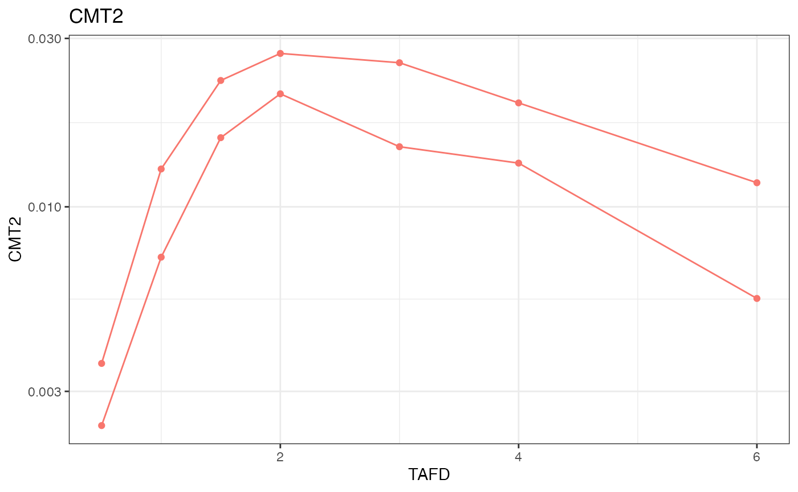

INTRODUCTION
- NIF data can be imported
- nif objects by default contain more information than minimally required by the NONMEM specification
- ANALYTE, PARENT, DOSE and TAFD fields are automatically generated
- other fields may be derived by renaming terms
The code in this vignette depends on the following packages:
For this demonstration, we use a minimal nif dataset that contains data from 2 subjects with single administrations into compartment 1, and observations up to 6 hours from compartment 2:
ID,TIME,AMT,RATE,EVID,DV,CMT,MDV
1,0,5,0,1,.,1,1
1,0,0,0,0,0,2,0
1,0.5,0,0,0,0.0024,2,0
1,1,0,0,0,0.0072,2,0
1,1.5,0,0,0,0.0157,2,0
1,2,0,0,0,0.0209,2,0
1,3,0,0,0,0.0148,2,0
1,4,0,0,0,0.0133,2,0
1,6,0,0,0,0.0055,2,0
2,0,5,0,1,.,1,1
2,0,0,0,0,0,2,0
2,0.5,0,0,0,0.0036,2,0
2,1,0,0,0,0.0128,2,0
2,1.5,0,0,0,0.0228,2,0
2,2,0,0,0,0.0272,2,0
2,3,0,0,0,0.0256,2,0
2,4,0,0,0,0.0197,2,0
2,6,0,0,0,0.0117,2,0The dataset contains the minimally expected columns, ID, TIME, AMT,
RATE, EVID, DV, CMT, MDV, and is provided as a csv file
(csv_file_name).
IMPORTING NIF DATA
The external data can be imported as a nif object using
import_nif():
nif <- import_nif(csv_file_name, format = "csv")
head(nif)
#> ID TIME EVID AMT CMT MDV RATE DV
#> 1 1 0.0 1 5 1 1 0 NA
#> 2 1 0.0 0 0 2 0 0 0.0000
#> 3 1 0.5 0 0 2 0 0 0.0024
#> 4 1 1.0 0 0 2 0 0 0.0072
#> 5 1 1.5 0 0 2 0 0 0.0157
#> 6 1 2.0 0 0 2 0 0 0.0209The resulting object behaves as a regular nif object,
for example, it can be summarized or plotted or otherwise explored (see
vignette("nif-tutorial") for more information):
summary(nif)
#> ----- NONMEM Input Format (NIF) data summary -----
#> Data from 2 subjects across 0 studies:
#> N
#> 2
#>
#> Sex distribution:
#> SEX N percent
#> male 0 0
#> female 0 0
#> NA 2 100
#>
#> Treatments:
#> CMT1
#>
#> Analytes:
#> CMT2
#>
#> Subjects per dose level:
#> CMT1 N
#> 5 2
#>
#> 16 observations:
#> CMT N
#> 2 16
#>
#> Subjects with dose reductions
#> CMT1
#> 0
#>
#> Treatment duration overview:
#> PARENT min max mean median
#> CMT1 1 1 1 1
#>
#> Hash: cdd030cc138dc65c68205170cb355caa
plot(nif, log = T, points = T)
Transformations
In some cases, the data to be imported include columns that should be renamed or transformed to match the desired naming conventions, or to otherwise support downstream analyses.
For this demonstration, let’s assume that the ‘TIME’ field in the csv
file is also the nominal time, and we want to include it in the nif
object as ‘NTIME’. in addition, the values in DV should be transformed
from ng/ml to micromolar concentrations (assuming a MW of 400 g/mol).
import_nif() allows these transformations to be executed
during the data import. Transformation terms need to be provided in the
form of new_field ~ transformation_term:
nif <- import_nif(
csv_file_name,
format = "csv",
NTIME ~ TIME,
DV ~ DV/400
)
head(nif)
#> ID TIME NTIME EVID AMT CMT MDV RATE DV
#> 1 1 0.0 0.0 1 5 1 1 0 NA
#> 2 1 0.0 0.0 0 0 2 0 0 0.000e+00
#> 3 1 0.5 0.5 0 0 2 0 0 6.000e-06
#> 4 1 1.0 1.0 0 0 2 0 0 1.800e-05
#> 5 1 1.5 1.5 0 0 2 0 0 3.925e-05
#> 6 1 2.0 2.0 0 0 2 0 0 5.225e-05